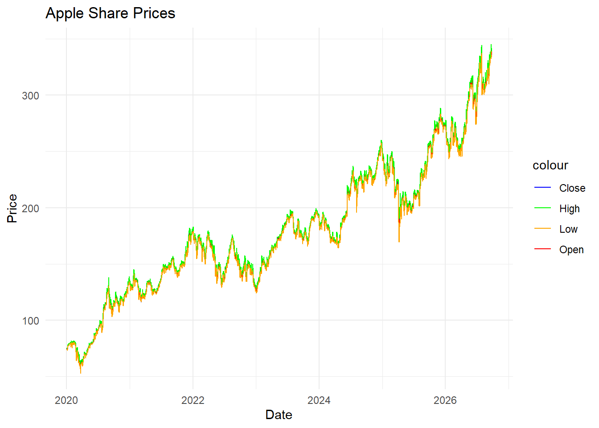

library(RSQLite)
library(dplyr)Finanzas en R
Actividad 03
Actividad 3
R y SQL
Veremos un ejemplo simple de conexión entre R y SQL; en este caso utilizamos SQLite.
LibrerÃas y conexión
Se establece la conexión con:
con <- dbConnect(SQLite())Escritura de tabla y schema
Escribimos una tabla en base al set de prueba mtcars
dbWriteTable(con, "mtcars_sql", mtcars)Dos maneras para inspeccionar el schema y las tablas son los siguientes:
tables <- dbListTables(con)
schema <- dbGetQuery(con, "PRAGMA table_info(mtcars_sql)")El primero nos permite ver las tablas en el schema en donde estamos trabajando y el segundo nos permite inspeccionar las carácteristicas de la tabla especificada. ## Lectura usando SQL
Una primera manera es utilizar la query relacionada con la conexión de SQL que estamos utilizando:
data_01 <- dbGetQuery(con, 'SELECT MPG, CYL FROM mtcars_sql WHERE MPG > 30')
data_01 mpg cyl
1 32.4 4
2 30.4 4
3 33.9 4
4 30.4 4Otra forma es “estorear” la query para después hacer la búsqueda:
get_data_02 <- dbSendQuery(con, "SELECT MPG, CYL FROM mtcars_sql WHERE MPG > 30")
data_02 <- dbFetch(get_data_02)
data_02 mpg cyl
1 32.4 4
2 30.4 4
3 33.9 4
4 30.4 4La otra manera es convertir la tabla de sql a un dataframe en base a dplyr. Después usamos los comandos propios de R para lograr el mismo resultado anterior:
tabla_cars <- tbl(con, 'mtcars_sql')Warning: Closing open result set, pending rowstabla_cars %>%
select(mpg, cyl) %>%
filter(mpg>30) %>%
arrange(mpg) # Source: SQL [?? x 2]
# Database: sqlite 3.50.1 []
# Ordered by: mpg
mpg cyl
<dbl> <dbl>
1 30.4 4
2 30.4 4
3 32.4 4
4 33.9 4¿Cómo se verÃa esto en una query? Preguntemosle a R:
tabla_cars %>%
select(mpg, cyl) %>%
filter(mpg>30) %>%
arrange(mpg) %>%
show_query()<SQL>
SELECT `mpg`, `cyl`
FROM `mtcars_sql`
WHERE (`mpg` > 30.0)
ORDER BY `mpg`Obtener datos financieros
Ejemplo 1
# Load necessary libraries
library(quantmod)
library(DBI)
library(RSQLite)
# Define a function to fetch financial data
fetch_financial_data <- function(symbol, start_date, end_date) {
# Fetch data using quantmod
data <- getSymbols(symbol, from = start_date, to = end_date, auto.assign = FALSE)
return(data)
}
# Define your SQLite database file
sqlite_file <- "financial_data.db"
# Connect to SQLite database
conn <- dbConnect(SQLite(), sqlite_file)
# Define the symbol and time frame
symbol <- "AAPL"
start_date <- "2020-01-01"
end_date <- Sys.Date() # Today's date
# Fetch financial data
financial_data <- fetch_financial_data(symbol, start_date, end_date)
# Convert xts object to data frame
financial_data_df <- data.frame(date = index(financial_data), coredata(financial_data))
# Write data to SQLite database
dbWriteTable(conn, "stock_data_01", financial_data_df, overwrite = TRUE)
# Close the database connection
data_financial <- dbGetQuery(conn, 'SELECT * FROM stock_data')
data_financial %>% head() date AAPL.Open AAPL.High AAPL.Low AAPL.Close AAPL.Volume AAPL.Adjusted
1 18263 74.0600 75.1500 73.7975 75.0875 135480400 73.05943
2 18264 74.2875 75.1450 74.1250 74.3575 146322800 72.34914
3 18267 73.4475 74.9900 73.1875 74.9500 118387200 72.92564
4 18268 74.9600 75.2250 74.3700 74.5975 108872000 72.58267
5 18269 74.2900 76.1100 74.2900 75.7975 132079200 73.75025
6 18270 76.8100 77.6075 76.5500 77.4075 170108400 75.31676Reflexionemos sobre el paso a paso.
Ejemplo 2
# Load necessary libraries
library(quantmod)
library(DBI)
library(RSQLite)
# Define a function to fetch financial data
fetch_financial_data <- function(symbol, start_date, end_date) {
# Fetch data using quantmod
data <- getSymbols(symbol, from = start_date, to = end_date, auto.assign = FALSE)
return(data)
}
# Define your SQLite database file
sqlite_file <- "financial_data.db"
# Connect to SQLite database
conn <- dbConnect(SQLite(), sqlite_file)
# Define the symbol and time frame
symbol <- "AAPL"
start_date <- "2020-01-01"
end_date <- Sys.Date() # Today's date
# Fetch financial data
financial_data <- fetch_financial_data(symbol, start_date, end_date)
# Convert xts object to data frame
financial_data_df <- data.frame(date = index(financial_data), coredata(financial_data))
# Define SQL command to create table
create_table_sql <- "
CREATE TABLE IF NOT EXISTS stock_data (
date TEXT PRIMARY KEY,
open REAL,
high REAL,
low REAL,
close REAL,
volume REAL,
adjusted REAL
);
"
# Execute SQL command to create table
dbExecute(conn, create_table_sql)[1] 0# Prepare data for insertion
insert_values_sql <- "INSERT OR REPLACE INTO stock_data VALUES (?, ?, ?, ?, ?, ?, ?)"
# Insert data into table row by row
for (i in 1:nrow(financial_data_df)) {
row_values <- unname(as.list(financial_data_df[i, ]))
dbExecute(conn, insert_values_sql, params = row_values)
}
dbWriteTable(conn, "stock_data_02", financial_data_df, overwrite = TRUE)
financial_data_df %>% head() date AAPL.Open AAPL.High AAPL.Low AAPL.Close AAPL.Volume AAPL.Adjusted
1 2020-01-02 74.0600 75.1500 73.7975 75.0875 135480400 72.27155
2 2020-01-03 74.2875 75.1450 74.1250 74.3575 146322800 71.56892
3 2020-01-06 73.4475 74.9900 73.1875 74.9500 118387200 72.13921
4 2020-01-07 74.9600 75.2250 74.3700 74.5975 108872000 71.79992
5 2020-01-08 74.2900 76.1100 74.2900 75.7975 132079200 72.95491
6 2020-01-09 76.8100 77.6075 76.5500 77.4075 170108400 74.50455Veamos de nuevo el schema:
tables <- dbListTables(conn)
tables[1] "stock_data" "stock_data_01" "stock_data_02"Hacemos un gráfico simple:
# Load necessary libraries
library(ggplot2)
# Convert xts object to data frame
financial_data_df <- data.frame(date = index(financial_data), coredata(financial_data))
# Convert date to Date class
financial_data_df$date <- as.Date(financial_data_df$date)
# Plot line chart
ggplot(financial_data_df, aes(x = date)) +
geom_line(aes(y = AAPL.Close, color = "Close")) +
geom_line(aes(y = AAPL.Open, color = "Open")) +
geom_line(aes(y = AAPL.High, color = "High")) +
geom_line(aes(y = AAPL.Low, color = "Low")) +
scale_color_manual(values = c("Close" = "blue", "Open" = "red", "High" = "green", "Low" = "orange")) +
labs(x = "Date", y = "Price", title = "Apple Share Prices") +
theme_minimal()